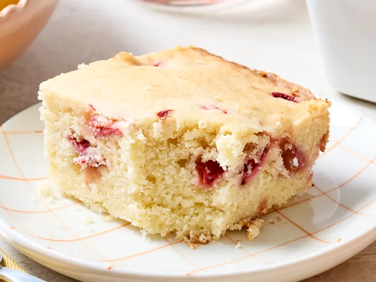

Home
strawberry-lemon-blondies

Description
This powerhouse combination of fresh berries and punchy citrus that tastes just like strawberry lemonade
Ingredient
- 1 cup salted butter,softened
- 1 cup white sugar
- 1 large egg
- 1 large lemon
- 2 1/3 cups all-purpose flour
- 1/4 teaspoon baking soda
- 1 1/4 cups diced fresh strawberry
Steps
- Preheat the oven. Line a baking dish with lightly greased
- Beat butter and sugar together unti creamy
- Zest the lemon; cut lemon in half,squeeze, and measure 3 tablespoon lemon juice. Add zest juice to blondie and beat until fully incorporated
- Spread batter into the baking dish and smooth the top